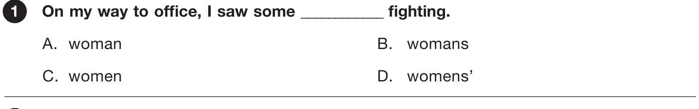
For questions 1 to 7, choose the correct option to fill in the blank.
On my way to office, I saw some ____________ fighting.
woman
womans
women
womens’
The determiner “some” requires a plural noun and the correct plural noun is “women”.
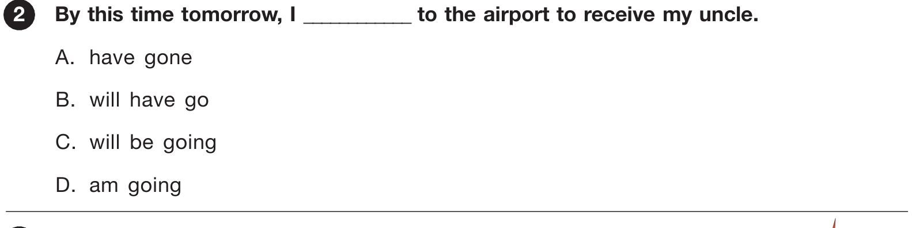
For questions 1 to 7, choose the correct option to fill in the blank.
By this time tomorrow, I ____________ to the airport to receive my uncle.
have gone
will have go
will be going
am going
With reference to the time clause ‘by this time tomorrow’, the future continuous tense form ‘will be going’ is to be used to express an action that will be in progress at a particular time in the future.
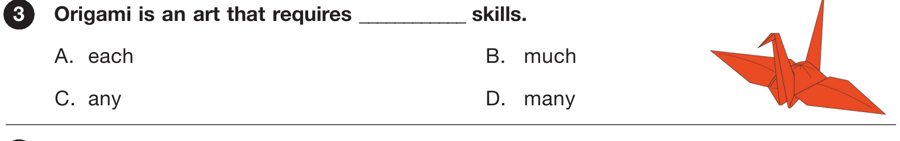
For questions 1 to 7, choose the correct option to fill in the blank.
Origami is an art that requires ____________ skills.
each
much
any
many
The adjective “many” is to be used before the plural countable noun (skills). It means a large number.
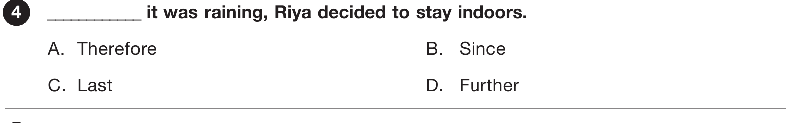
For questions 1 to 7, choose the correct option to fill in the blank.
____________ it was raining, Riya decided to stay indoors.
Therefore
Since
Last
Further
The conjunction “since” is to be used to show or explain a reason.
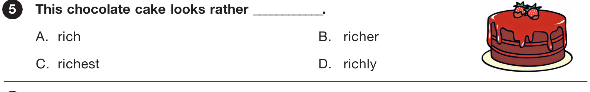
For questions 1 to 7, choose the correct option to fill in the blank.
This chocolate cake looks rather ____________.
rich
richer
richest
richly
The adjective “rich” is to be used to describe the noun (chocolate cake) to show that the cake contains a large amount of oil, butter, eggs, or cream.
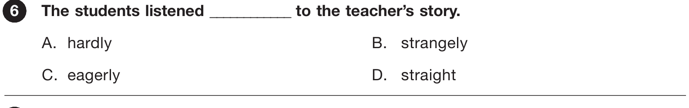
For questions 1 to 7, choose the correct option to fill in the blank.
The students listened ____________ to the teacher’s story.
hardly
strangely
eagerly
straight
The adverb “eagerly” is to be used to modify the verb (listened) in the sentence and to show that the action was done with great interest and enthusiasm.
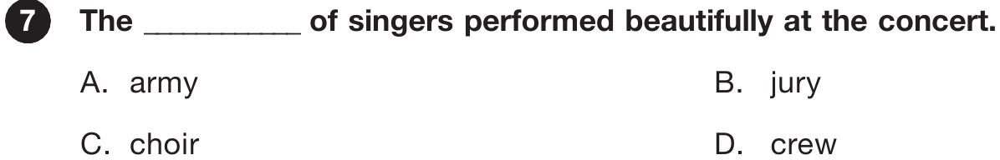
For questions 1 to 7, choose the correct option to fill in the blank.
The ____________ of singers performed beautifully at the concert.
army
jury
choir
crew
The appropriate collective noun to be used is “choir” because a group of singers is called a choir.
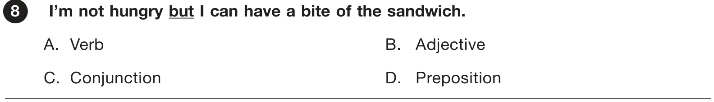
For questions 8 and 9, choose the correct option for the underlined word.
Verb
Adjective
Conjunction
Preposition
The underlined word “but” is a conjunction because it joins two clauses and shows contrast between them.
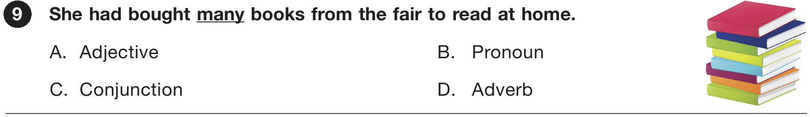
For questions 8 and 9, choose the correct option for the underlined word.
Adjective
Pronoun
Conjunction
Adverb
The underlined word “many” is an adjective because it describes the noun (books) and tells its quantity.
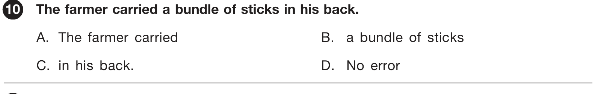
For questions 10 and 11, choose the part of the sentence that has an error.
The farmer carried a bundle of sticks in his back.
The farmer carried
a bundle of sticks
in his back.
No error
The correct sentence is “The farmer carried a bundle of sticks on his back.” Hence, option C has the error.
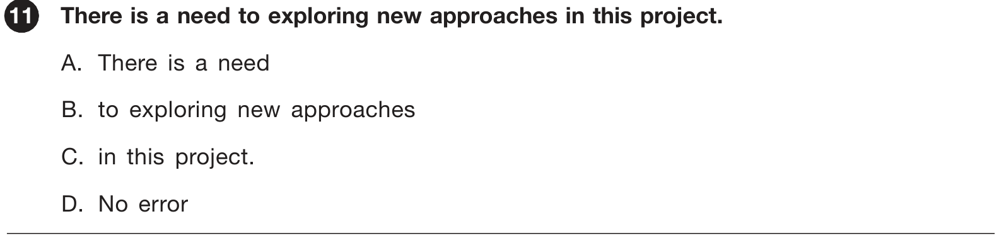
For questions 10 and 11, choose the part of the sentence that has an error.
There is a need to exploring new approaches in this project.
There is a need
to exploring new approaches
in this project.
No error
The correct sentence is “There is a need to explore new approaches in this project.” Hence, option B has the error.
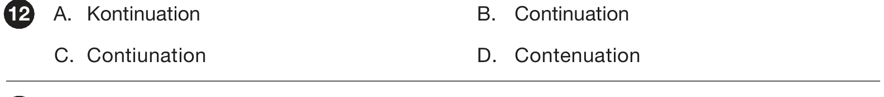
For questions 12 and 13, choose the option with correct spelling.
Kontinuation
Continuation
Contiunation
Contenuation
The correct spelling is “continuation”, which means ‘the act of continuing something’.
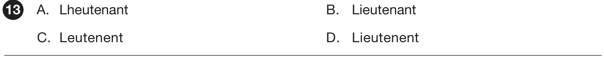
For questions 12 and 13, choose the option with correct spelling.
Lheutenant
Lieutenant
Leutenent
Lieutenent
The correct spelling is “lieutenant”, which means ‘an officer of middle rank in the armed forces’.
Choose the correct synonym of vagabond.
Steady
Hobo
Success
Settled
The correct synonym of “vagabond” is “hobo”, as they both refer to ‘a person who wanders from place to place without a permanent home or job’.
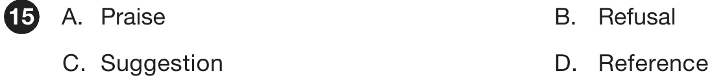
Choose the correct antonym of recommend.
Praise
Refusal
Suggestion
Reference
The correct antonym of “recommend” is “refusal” because recommend means ‘to suggest or support something’, while refuse means ‘to reject or say no’.
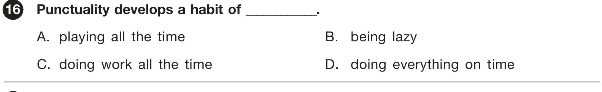
For questions 16 to 20, read the passage and answer the questions that follow.
Punctuality means being on time. It is the habit of doing everything at the right time. A punctual person never gets late for school, work, or any event. Punctuality shows that we are responsible, well-mannered, and serious about our duties. Imagine a school where all students come late. Classes will start late, and the whole day will be full of confusion. But if everyone comes on time, lessons can begin on time, and students can learn more. That is why teachers always tell children to be punctual.
Punctuality is also important in everyday life. If we miss the school bus because we are late, we may have to walk or wait a long time for another one. If we are late for a train or flight, we may miss it. Being late can cause many problems. Let’s take an example. Rahul is a class 4 student who is always late. He wakes up late, rushes to school, forgets his homework, and misses important lessons. His teachers and parents are often upset. One day, Rahul missed his school picnic because he reached late. He felt very sad.
His friend Maya is different. She wakes up early, gets ready on time, and reaches school before the bell rings. She is always prepared and never forgets her homework. Her teachers are happy with her, and she gets good marks. Rahul realized his mistake and decided to change. He started waking up early and being on time. Soon, he too became punctual and felt proud of himself.
Being punctual helps us win the trust of others. People like to work with someone who respects time. It helps us complete our work, attend important events, and be successful in life.
Punctuality develops a habit of ____________.
playing all the time
being lazy
doing work all the time
doing everything on time
According to paragraph 1, punctuality develops a habit of doing everything on time.
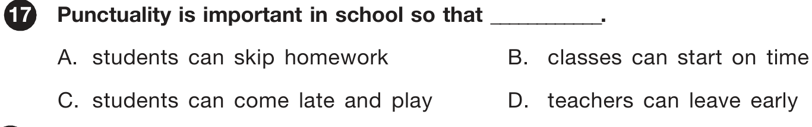
For questions 16 to 20, read the passage and answer the questions that follow.
Punctuality means being on time. It is the habit of doing everything at the right time. A punctual person never gets late for school, work, or any event. Punctuality shows that we are responsible, well-mannered, and serious about our duties. Imagine a school where all students come late. Classes will start late, and the whole day will be full of confusion. But if everyone comes on time, lessons can begin on time, and students can learn more. That is why teachers always tell children to be punctual.
Punctuality is also important in everyday life. If we miss the school bus because we are late, we may have to walk or wait a long time for another one. If we are late for a train or flight, we may miss it. Being late can cause many problems. Let’s take an example. Rahul is a class 4 student who is always late. He wakes up late, rushes to school, forgets his homework, and misses important lessons. His teachers and parents are often upset. One day, Rahul missed his school picnic because he reached late. He felt very sad.
His friend Maya is different. She wakes up early, gets ready on time, and reaches school before the bell rings. She is always prepared and never forgets her homework. Her teachers are happy with her, and she gets good marks. Rahul realized his mistake and decided to change. He started waking up early and being on time. Soon, he too became punctual and felt proud of himself.
Being punctual helps us win the trust of others. People like to work with someone who respects time. It helps us complete our work, attend important events, and be successful in life.
Punctuality is important in school so that ____________.
students can skip homework
classes can start on time
students can come late and play
teachers can leave early
As mentioned in paragraph 2, punctuality is important in school so that classes can start on time.
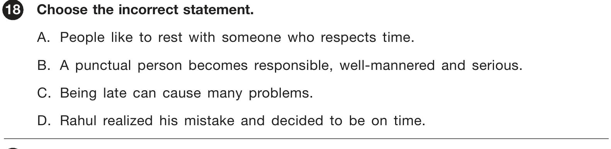
For questions 16 to 20, read the passage and answer the questions that follow.
Punctuality means being on time. It is the habit of doing everything at the right time. A punctual person never gets late for school, work, or any event. Punctuality shows that we are responsible, well-mannered, and serious about our duties. Imagine a school where all students come late. Classes will start late, and the whole day will be full of confusion. But if everyone comes on time, lessons can begin on time, and students can learn more. That is why teachers always tell children to be punctual.
Punctuality is also important in everyday life. If we miss the school bus because we are late, we may have to walk or wait a long time for another one. If we are late for a train or flight, we may miss it. Being late can cause many problems. Let’s take an example. Rahul is a class 4 student who is always late. He wakes up late, rushes to school, forgets his homework, and misses important lessons. His teachers and parents are often upset. One day, Rahul missed his school picnic because he reached late. He felt very sad.
His friend Maya is different. She wakes up early, gets ready on time, and reaches school before the bell rings. She is always prepared and never forgets her homework. Her teachers are happy with her, and she gets good marks. Rahul realized his mistake and decided to change. He started waking up early and being on time. Soon, he too became punctual and felt proud of himself.
Being punctual helps us win the trust of others. People like to work with someone who respects time. It helps us complete our work, attend important events, and be successful in life.
Choose the incorrect statement.
People like to rest with someone who respects time.
A punctual person becomes responsible, well-mannered and serious.
Being late can cause many problems.
Rahul realized his mistake and decided to be on time.
The passage states that people like to work with someone who respects time; hence, option A is the correct answer.
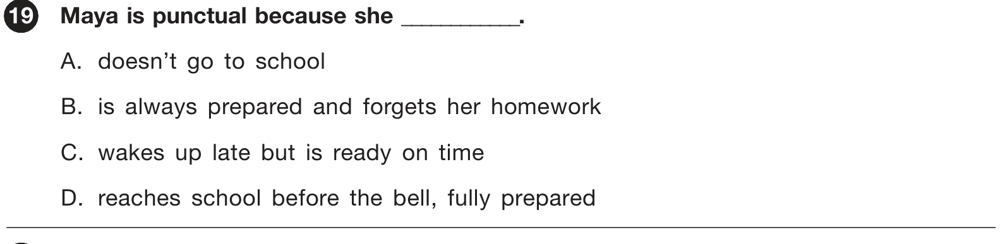
For questions 16 to 20, read the passage and answer the questions that follow.
Punctuality means being on time. It is the habit of doing everything at the right time. A punctual person never gets late for school, work, or any event. Punctuality shows that we are responsible, well-mannered, and serious about our duties. Imagine a school where all students come late. Classes will start late, and the whole day will be full of confusion. But if everyone comes on time, lessons can begin on time, and students can learn more. That is why teachers always tell children to be punctual.
Punctuality is also important in everyday life. If we miss the school bus because we are late, we may have to walk or wait a long time for another one. If we are late for a train or flight, we may miss it. Being late can cause many problems. Let’s take an example. Rahul is a class 4 student who is always late. He wakes up late, rushes to school, forgets his homework, and misses important lessons. His teachers and parents are often upset. One day, Rahul missed his school picnic because he reached late. He felt very sad.
His friend Maya is different. She wakes up early, gets ready on time, and reaches school before the bell rings. She is always prepared and never forgets her homework. Her teachers are happy with her, and she gets good marks. Rahul realized his mistake and decided to change. He started waking up early and being on time. Soon, he too became punctual and felt proud of himself.
Being punctual helps us win the trust of others. People like to work with someone who respects time. It helps us complete our work, attend important events, and be successful in life.
Maya is punctual because she ____________.
doesn’t go to school
is always prepared and forgets her homework
wakes up late but is ready on time
reaches school before the bell, fully prepared
As stated in paragraph 5, Maya is punctual because she reaches school before the bell, fully prepared.
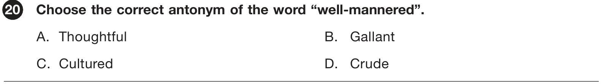
For questions 16 to 20, read the passage and answer the questions that follow.
Punctuality means being on time. It is the habit of doing everything at the right time. A punctual person never gets late for school, work, or any event. Punctuality shows that we are responsible, well-mannered, and serious about our duties. Imagine a school where all students come late. Classes will start late, and the whole day will be full of confusion. But if everyone comes on time, lessons can begin on time, and students can learn more. That is why teachers always tell children to be punctual.
Punctuality is also important in everyday life. If we miss the school bus because we are late, we may have to walk or wait a long time for another one. If we are late for a train or flight, we may miss it. Being late can cause many problems. Let’s take an example. Rahul is a class 4 student who is always late. He wakes up late, rushes to school, forgets his homework, and misses important lessons. His teachers and parents are often upset. One day, Rahul missed his school picnic because he reached late. He felt very sad.
His friend Maya is different. She wakes up early, gets ready on time, and reaches school before the bell rings. She is always prepared and never forgets her homework. Her teachers are happy with her, and she gets good marks. Rahul realized his mistake and decided to change. He started waking up early and being on time. Soon, he too became punctual and felt proud of himself.
Being punctual helps us win the trust of others. People like to work with someone who respects time. It helps us complete our work, attend important events, and be successful in life.
Choose the correct antonym of the word “well-mannered”.
Thoughtful
Gallant
Cultured
Crude
The correct antonym of “well-mannered” is “crude” because well-mannered means ‘polite and respectful’, while crude means ‘impolite’.
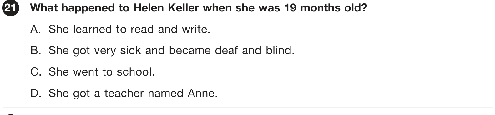
For questions 21 to 25, read the passage and answer the questions that follow.
Helen Keller was born on June 27, 1880, in Alabama, USA. She was a happy and healthy baby. But when she was just 19 months old, she became very sick with a high fever. After the illness, Helen could no longer see or hear anything. She became deaf and blind.
Life became very hard for Helen. She could not talk, listen, or see. She often felt angry and confused because she could not understand what was happening around her. Her parents wanted to help her, so they looked for a special teacher. That teacher was Anne Sullivan.
Anne Sullivan came to teach Helen when she was 7 years old. At first, Helen did not want to learn. She would get upset and throw things at her. But Anne did not give up. She was patient and kind.
One day, Anne took Helen to a water pump. She placed Helen’s hand under the cool water and used her other hand to spell the word “W-A-T-E-R” on Helen’s palm. Slowly, Helen understood that everything had a name. This was the turning point in her life.
Helen worked very hard after that. She learned to read and write using Braille, a special writing system for blind people. She also learned to speak by feeling the movements of people’s lips with her fingers. With Anne’s help, Helen even went to college and became the first deaf-blind person to earn a university degree!
Helen Keller later wrote books and gave speeches to inspire others. She worked for the rights of differently abled people all around the world. She showed everyone that with hard work and support, nothing is impossible.
Helen Keller passed away in 1968, but her story still inspires millions of people today.
What happened to Helen Keller when she was 19 months old?
She learned to read and write.
She got very sick and became deaf and blind.
She went to school.
She got a teacher named Anne.
According to paragraph 1, Helen Keller got very sick and became deaf and blind when she was 19 months old.
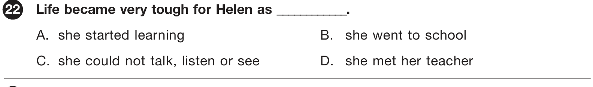
For questions 21 to 25, read the passage and answer the questions that follow.
Helen Keller was born on June 27, 1880, in Alabama, USA. She was a happy and healthy baby. But when she was just 19 months old, she became very sick with a high fever. After the illness, Helen could no longer see or hear anything. She became deaf and blind.
Life became very hard for Helen. She could not talk, listen, or see. She often felt angry and confused because she could not understand what was happening around her. Her parents wanted to help her, so they looked for a special teacher. That teacher was Anne Sullivan.
Anne Sullivan came to teach Helen when she was 7 years old. At first, Helen did not want to learn. She would get upset and throw things at her. But Anne did not give up. She was patient and kind.
One day, Anne took Helen to a water pump. She placed Helen’s hand under the cool water and used her other hand to spell the word “W-A-T-E-R” on Helen’s palm. Slowly, Helen understood that everything had a name. This was the turning point in her life.
Helen worked very hard after that. She learned to read and write using Braille, a special writing system for blind people. She also learned to speak by feeling the movements of people’s lips with her fingers. With Anne’s help, Helen even went to college and became the first deaf-blind person to earn a university degree!
Helen Keller later wrote books and gave speeches to inspire others. She worked for the rights of differently abled people all around the world. She showed everyone that with hard work and support, nothing is impossible.
Helen Keller passed away in 1968, but her story still inspires millions of people today.
Life became very tough for Helen as ____________.
she started learning
she went to school
she could not talk, listen or see
she met her teacher
According to paragraph 2, life became very tough for Helen as she could not talk, listen or see.
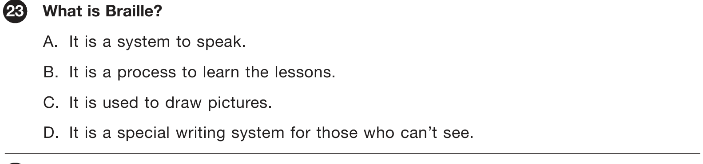
For questions 21 to 25, read the passage and answer the questions that follow.
Helen Keller was born on June 27, 1880, in Alabama, USA. She was a happy and healthy baby. But when she was just 19 months old, she became very sick with a high fever. After the illness, Helen could no longer see or hear anything. She became deaf and blind.
Life became very hard for Helen. She could not talk, listen, or see. She often felt angry and confused because she could not understand what was happening around her. Her parents wanted to help her, so they looked for a special teacher. That teacher was Anne Sullivan.
Anne Sullivan came to teach Helen when she was 7 years old. At first, Helen did not want to learn. She would get upset and throw things at her. But Anne did not give up. She was patient and kind.
One day, Anne took Helen to a water pump. She placed Helen’s hand under the cool water and used her other hand to spell the word “W-A-T-E-R” on Helen’s palm. Slowly, Helen understood that everything had a name. This was the turning point in her life.
Helen worked very hard after that. She learned to read and write using Braille, a special writing system for blind people. She also learned to speak by feeling the movements of people’s lips with her fingers. With Anne’s help, Helen even went to college and became the first deaf-blind person to earn a university degree!
Helen Keller later wrote books and gave speeches to inspire others. She worked for the rights of differently abled people all around the world. She showed everyone that with hard work and support, nothing is impossible.
Helen Keller passed away in 1968, but her story still inspires millions of people today.
What is Braille?
It is a system to speak.
It is a process to learn the lessons.
It is used to draw pictures.
It is a special writing system for those who can’t see.
As stated in paragraph 5, Braille is a special writing system for people who cannot see.
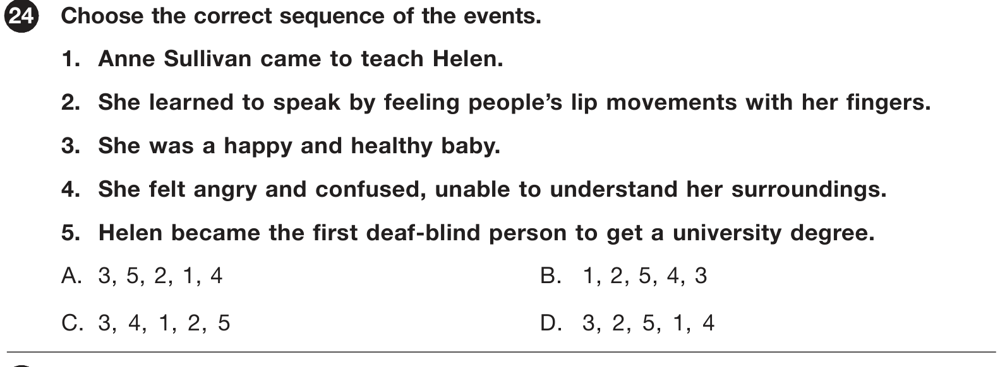
For questions 21 to 25, read the passage and answer the questions that follow.
Helen Keller was born on June 27, 1880, in Alabama, USA. She was a happy and healthy baby. But when she was just 19 months old, she became very sick with a high fever. After the illness, Helen could no longer see or hear anything. She became deaf and blind.
Life became very hard for Helen. She could not talk, listen, or see. She often felt angry and confused because she could not understand what was happening around her. Her parents wanted to help her, so they looked for a special teacher. That teacher was Anne Sullivan.
Anne Sullivan came to teach Helen when she was 7 years old. At first, Helen did not want to learn. She would get upset and throw things at her. But Anne did not give up. She was patient and kind.
One day, Anne took Helen to a water pump. She placed Helen’s hand under the cool water and used her other hand to spell the word “W-A-T-E-R” on Helen’s palm. Slowly, Helen understood that everything had a name. This was the turning point in her life.
Helen worked very hard after that. She learned to read and write using Braille, a special writing system for blind people. She also learned to speak by feeling the movements of people’s lips with her fingers. With Anne’s help, Helen even went to college and became the first deaf-blind person to earn a university degree!
Helen Keller later wrote books and gave speeches to inspire others. She worked for the rights of differently abled people all around the world. She showed everyone that with hard work and support, nothing is impossible.
Helen Keller passed away in 1968, but her story still inspires millions of people today.
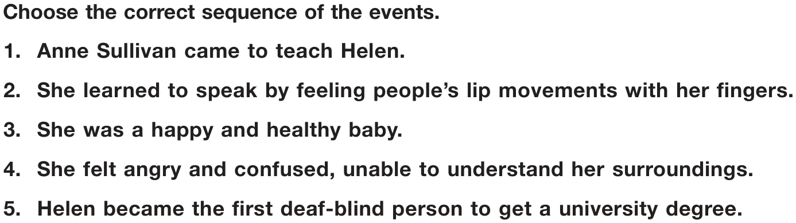
3, 5, 2, 1, 4
1, 2, 5, 4, 3
3, 4, 1, 2, 5
3, 2, 5, 1, 4
Option C is the correct answer because it arranges the events in the same order as they are given in the passage.
For questions 21 to 25, read the passage and answer the questions that follow.
Helen Keller was born on June 27, 1880, in Alabama, USA. She was a happy and healthy baby. But when she was just 19 months old, she became very sick with a high fever. After the illness, Helen could no longer see or hear anything. She became deaf and blind.
Life became very hard for Helen. She could not talk, listen, or see. She often felt angry and confused because she could not understand what was happening around her. Her parents wanted to help her, so they looked for a special teacher. That teacher was Anne Sullivan.
Anne Sullivan came to teach Helen when she was 7 years old. At first, Helen did not want to learn. She would get upset and throw things at her. But Anne did not give up. She was patient and kind.
One day, Anne took Helen to a water pump. She placed Helen’s hand under the cool water and used her other hand to spell the word “W-A-T-E-R” on Helen’s palm. Slowly, Helen understood that everything had a name. This was the turning point in her life.
Helen worked very hard after that. She learned to read and write using Braille, a special writing system for blind people. She also learned to speak by feeling the movements of people’s lips with her fingers. With Anne’s help, Helen even went to college and became the first deaf-blind person to earn a university degree!
Helen Keller later wrote books and gave speeches to inspire others. She worked for the rights of differently abled people all around the world. She showed everyone that with hard work and support, nothing is impossible.
Helen Keller passed away in 1968, but her story still inspires millions of people today.
Choose the correct synonym of the word ‘inspire’.
Depress
Contain
Daunt
Motivate
The correct synonym of “inspire” is “motivate”, as they both mean ‘to encourage someone to take action or do something better’.
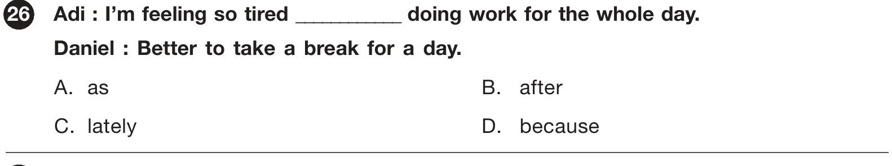
For questions 26 to 30, choose the correct option to complete each conversation.
Adi : I’m feeling so tired ____________ doing work for the whole day.
Daniel : Better to take a break for a day.
as
after
lately
because
The preposition “after” is to be used to show that one action (feeling tired) happened later than another action (doing a lot of work).
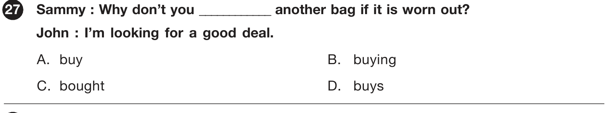
For questions 26 to 30, choose the correct option to complete each conversation.
Sammy : Why don’t you ____________ another bag if it is worn out?
John : I’m looking for a good deal.
buy
buying
bought
buys
The correct verb form to be used is “buy” because after “don’t”, the base form of the verb is required.
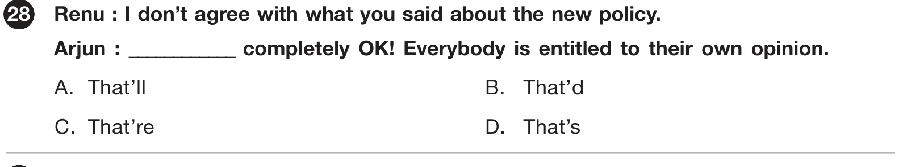
For questions 26 to 30, choose the correct option to complete each conversation.
Renu : I don’t agree with what you said about the new policy.
Arjun : ____________ completely OK! Everybody is entitled to their own opinion.
That’ll
That’d
That’re
That’s
The correct contraction to be used is “that’s” (that is) to make the conversation grammatically correct.
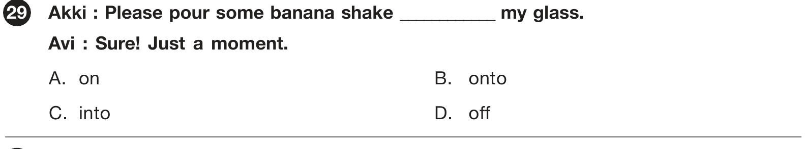
For questions 26 to 30, choose the correct option to complete each conversation.
Akki : Please pour some banana shake ____________ my glass.
Avi : Sure! Just a moment.
on
onto
into
off
The preposition “into” is to be used because it shows movement in or inside of something (here, glass).
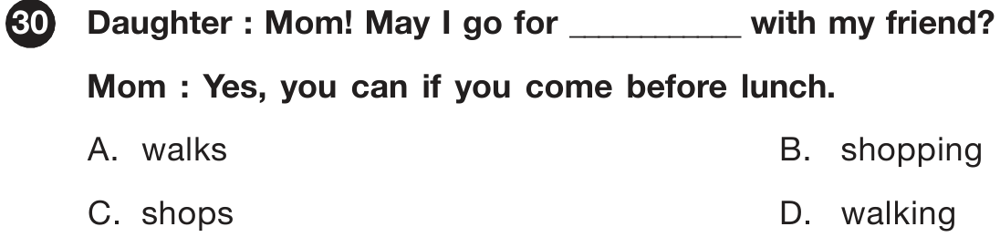
For questions 26 to 30, choose the correct option to complete each conversation.
Daughter : Mom! May I go for ____________ with my friend?
Mom : Yes, you can if you come before lunch.
walks
shopping
shops
walking
The appropriate verb to be used is “shopping” to make the conversation grammatically correct.
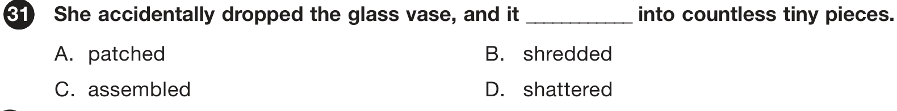
For questions 31 and 32, choose the correct option to fill in the blank.
She accidentally dropped the glass vase, and it ____________ into countless tiny pieces.
patched
shredded
assembled
shattered
The correct verb for to be used is “shattered”, which means broken into many pieces.
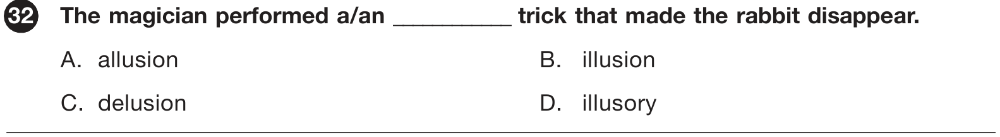
For questions 31 and 32, choose the correct option to fill in the blank.
The magician performed a/an ____________ trick that made the rabbit disappear.
allusion
illusion
delusion
illusory
The adjective “illusory” is to be used to describe something that has a false appearance.
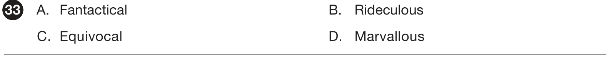
Choose the option with correct spelling.
Fantactical
Rideculous
Equivocal
Marvallous
The correct spelling is “equivocal”, which means ‘not easy to explain or understand’.
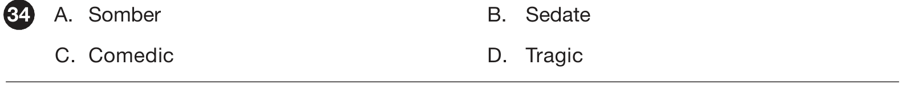
Choose the correct synonym of uproarious.
Somber
Sedate
Comedic
Tragic
The correct synonym of “uproarious” is “comedic” as both are used ‘to describe something that is very funny’.
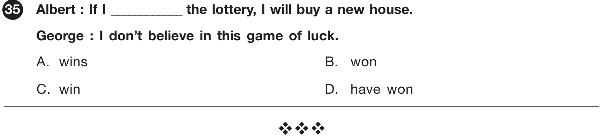
Choose the correct option to complete the conversation.
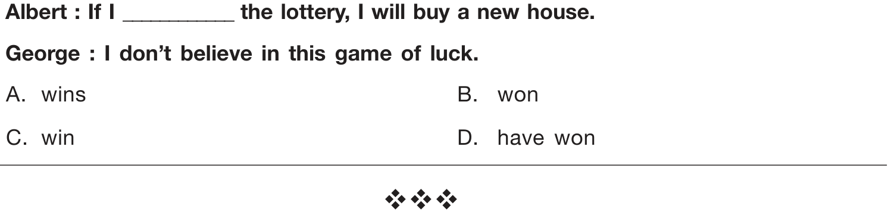
Option A
Option B
Option C
Option D
The verb “win” is to be used with the subject “I”, and in if-clauses we use the simple present tense to talk about future possibility. Hence, option C is correct.